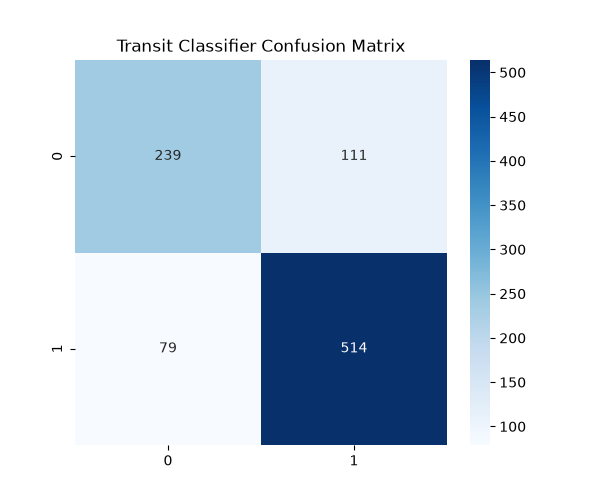
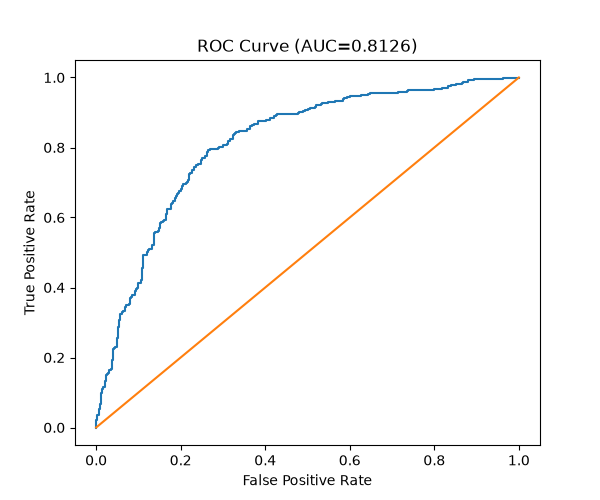
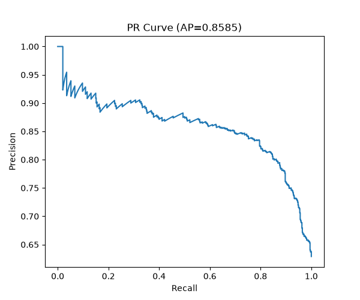

This project uses a deep learning based dual-view CNN to identify potential exoplanet transit signals from Kepler light curve observations.



| rank | file | prediction | confidence | scientific_score | period_days | duration_hours | depth_ppm | snr |
|---|---|---|---|---|---|---|---|---|
| 1 | 4455231_K01332.03.npz | planet_transit | 0.933549 | 0.840518 | 56.637918 | 6.1720 | 589.7 | 20.9 |
| 2 | 10858691_K01306.04.npz | planet_transit | 0.927130 | 0.834614 | 29.221496 | 4.0140 | 394.0 | 14.6 |
| 3 | 3832474_K00806.03.npz | planet_transit | 0.926369 | 0.833919 | 29.159862 | 4.8030 | 488.0 | 11.6 |
| 4 | 6587280_K00857.02.npz | planet_transit | 0.924961 | 0.832624 | 20.026141 | 1.6110 | 421.2 | 10.7 |
| 5 | 4650733_K01659.01.npz | planet_transit | 0.924283 | 0.832104 | 29.539090 | 4.1390 | 403.3 | 18.8 |
| 6 | 8410727_K01148.02.npz | planet_transit | 0.920074 | 0.828189 | 25.263047 | 6.2200 | 125.5 | 14.3 |
| 7 | 7287995_K00877.03.npz | planet_transit | 0.919810 | 0.828043 | 20.837629 | 2.3734 | 439.0 | 14.9 |
| 8 | 6786348_K01749.01.npz | planet_transit | 0.918748 | 0.827191 | 26.964501 | 3.7920 | 601.7 | 20.1 |
| 9 | 3240158_K01106.02.npz | planet_transit | 0.916472 | 0.824922 | 15.986893 | 4.1580 | 178.5 | 10.9 |
| 10 | 10538176_K01301.02.npz | planet_transit | 0.915556 | 0.824511 | 37.514213 | 5.3030 | 935.0 | 28.9 |
| 11 | 6604328_K01736.01.npz | planet_transit | 0.915465 | 0.824272 | 31.003307 | 5.2530 | 645.2 | 22.1 |
| 12 | 1718189_K00993.01.npz | planet_transit | 0.914386 | 0.823234 | 21.853629 | 3.4390 | 355.6 | 23.0 |
| 13 | 7032421_K01747.01.npz | planet_transit | 0.914095 | 0.823032 | 20.558484 | 1.4490 | 677.3 | 20.8 |
| 14 | 12266636_K01522.01.npz | planet_transit | 0.913703 | 0.822838 | 33.385618 | 5.0361 | 553.2 | 37.1 |
| 15 | 11176127_K01430.02.npz | planet_transit | 0.913723 | 0.822764 | 22.928863 | 2.0831 | 908.9 | 21.3 |
| 16 | 7455287_K00886.03.npz | planet_transit | 0.912609 | 0.821688 | 20.995879 | 2.6333 | 767.3 | 18.2 |
| 17 | 10004738_K01598.03.npz | planet_transit | 0.912257 | 0.821177 | 13.930688 | 2.3120 | 186.5 | 14.9 |
| 18 | 8150320_K00904.02.npz | planet_transit | 0.911824 | 0.821113 | 27.954134 | 3.9500 | 942.5 | 25.4 |
| 19 | 10166274_K01078.03.npz | planet_transit | 0.911196 | 0.820772 | 28.464648 | 2.6657 | 1629.8 | 28.9 |
| 20 | 3560301_K00968.01.npz | false_positive | 0.909433 | 0.819525 | 4.648416 | 38.1939 | 128.4 | 91.7 |